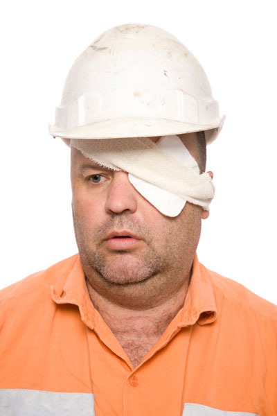

Facial Injuries
Facial Injuries
Facial injuries require special attention because they can damage several of the 'senses', the airway and possibly result in permanent disfigurement. Contusions, lacerations and puncture wounds can permanently disfigure the casualty. In the case of the cheek and chin, injuries also may result in loss of function if facial nerves or muscles are injured.
Ear injuries
The ear has two functions; as the receptacle of the auditory senses (hearing), and as the organ of balance. Injuries to the ear usually affect hearing function rather than balance.
Children are especially at risk of ear damage by inserting small objects into the ear canal. This can have serious effects on the tympanic membrane or 'eardrum'. An old, but sensible, saying is that 'nothing smaller than the elbow should be poked in the ear'.
The eardrum is easily damaged. Holes or tears may be caused by swimming and diving beneath the surface, change in altitude (flying), or by vigorous nose-blowing when 'stuffed up' with a cold or flu. Minor eardrum injuries usually spontaneously repair themselves over a period of hours.
Inner Ear

Care and Treatment
Ear Obstruction
 if an insect, attempt to float it out with warm water or clean light vegetable oil
if an insect, attempt to float it out with warm water or clean light vegetable oil
 if immovable object, seek medical aid
if immovable object, seek medical aid
 DO NOT poke anything into the ear
DO NOT poke anything into the ear
Ruptured Eardrum
 place cover over affected ear to guard against infection
place cover over affected ear to guard against infection
 seek medical aid
seek medical aid
 avoid using eardrops unless directed by a doctor
avoid using eardrops unless directed by a doctor
 avoid swimming or water sports
avoid swimming or water sports
Eye injuries
The eye is a robust but delicate organ. It can sustain quite severe damage and, with the proper treatment, recover to its former state. In some instances, however, a seemingly 'minor' injury can be permanently disabling.
Always consider preventing eye injuries and taking sufficient protective measures (such as protective glasses or goggles). Generally, eye injuries are considered as either minor or major injuries.
Anatomy of the Eye
Minor Eye Injuries
These are injuries where the eye has come in contact with a foreign object causing minor irritation, or the object remains on the surface of the eye. It is characterised by a bloodshot eye, irritation and an urge to rub the eye.

Care and Treatment
 irrigate the eye and wash the object out
irrigate the eye and wash the object out
 if this fails, touch the corner of a clean wet cloth to the object and lift it off the surface
if this fails, touch the corner of a clean wet cloth to the object and lift it off the surface
 refer to medical aid if vision is affected
refer to medical aid if vision is affected
 cover the affected eye if appropriate
cover the affected eye if appropriate
 avoid 'pushing' the object around the eye's surface
avoid 'pushing' the object around the eye's surface
 only use eye-drops if prescribed by a doctor
only use eye-drops if prescribed by a doctor
Major Eye Injuries
These are injuries that involve the penetration of the body of the eye, or involve severe blunt trauma to the eye. These injuries are characterised by blood in the eye, penetrating objects, disturbance of vision, protrusion of eye contents, and severe pain and spasms. Casualty care in this case is critical, and should be left to the experts.

Care and Treatment
 lay the casualty flat with complete rest
lay the casualty flat with complete rest
 call Triple Zero (000) for an ambulance
call Triple Zero (000) for an ambulance
 cover the affected eye
cover the affected eye
 if tolerated by the casualty, cover the unaffected eye, but remove it if the casualty becomes anxious
if tolerated by the casualty, cover the unaffected eye, but remove it if the casualty becomes anxious
 reassurance
reassurance
 avoid attempting to remove any penetrating object
avoid attempting to remove any penetrating object
 attempts to transport the casualty other than by ambulance should be resisted
attempts to transport the casualty other than by ambulance should be resisted
 eye-drops are not to be used under any circumstances
eye-drops are not to be used under any circumstances
Welder's Flash
Flash burn and welder's flash is the result of staring
or inadvertently looking at the intense light caused during metal welding, while not wearing the correct eye protection.
Care must be taken to supervise children if welding is being conducted near them, and they should be removed from the location. The damage caused to the eye's cornea by exposure to this intense light can be painful and, in some cases, permanent.

Care and Treatment
 apply cool compresses and cover the eyes with pads
apply cool compresses and cover the eyes with pads
 urgent medical attention if pain or spots persist
urgent medical attention if pain or spots persist
Tooth injuries
The structure of the tooth includes dentin, pulp and other tissues, blood vessels and nerves embedded in the bony jaw. Above the gum line, the tooth is protected by the hard enamel covering.
Anatomy of a Tooth
When a tooth is knocked out, appropriate emergency medical and dental care is necessary. If a child is 7 or more it is likely to be a second or permanent tooth. A second or permanent tooth can often be saved if prompt action is taken, and the tooth is handled carefully.
The delicate tissue covering the root must be protected to ensure successful re-implantation.
If a child is 6 or less it is likely to be a baby or primary tooth. Baby teeth may become injured after a fall and turn grey in colour. Treatment is not always necessary, but it is best to have the dentist examine the child as soon as possible.

Care and Treatment
When a baby or toddler injures gums or teeth:
 if there is bleeding, put cold water on a piece of gauze and apply pressure to the site
if there is bleeding, put cold water on a piece of gauze and apply pressure to the site
 offer the casualty an icy pole or ice cube to suck, to reduce swelling
offer the casualty an icy pole or ice cube to suck, to reduce swelling
 call your dentist. They will probably want to see the child to assess the need for realignment, or removal of a very loose tooth
call your dentist. They will probably want to see the child to assess the need for realignment, or removal of a very loose tooth
If a permanent tooth is knocked out:
 hold the tooth by the crown (chewing edge), not the root
hold the tooth by the crown (chewing edge), not the root
 rinse the tooth immediately with saline solution or milk,avoid scrubbing material off it. If this is not possible, wrap in plastic cling wrap
rinse the tooth immediately with saline solution or milk,avoid scrubbing material off it. If this is not possible, wrap in plastic cling wrap
 if the casualty will co-operate, replace the tooth gently in its socket
if the casualty will co-operate, replace the tooth gently in its socket
 have the casualty bite down gently on a gauze pad to keep the tooth in place
have the casualty bite down gently on a gauze pad to keep the tooth in place
 if the tooth cannot be re-inserted, put it in milk which is a good preservative because its chemical make-up is compatible with teeth
if the tooth cannot be re-inserted, put it in milk which is a good preservative because its chemical make-up is compatible with teeth
 if milk is not available, the tooth can be placed in the casualty's mouth between the teeth and cheek, if old enough not to swallow the tooth. If this is not possible, wrap in plastic cling wrap
if milk is not available, the tooth can be placed in the casualty's mouth between the teeth and cheek, if old enough not to swallow the tooth. If this is not possible, wrap in plastic cling wrap
 give the casualty a gauze pad or handkerchief to gently bite down on, which will help control bleeding and ease the pain
give the casualty a gauze pad or handkerchief to gently bite down on, which will help control bleeding and ease the pain
 see a dentist right away, within 20 minutes if possible
see a dentist right away, within 20 minutes if possible
 DO NOT replace the tooth or place anything in the mouth of a drowsy or unconscious casualty
DO NOT replace the tooth or place anything in the mouth of a drowsy or unconscious casualty
If the tooth can't be re-implanted, control bleeding by placing a gauze pad in the tooth socket, and then get the casualty to bite gently down on the pad. Avoid rinsing out the mouth because this can interfere with blood clotting.
If the gums are bleeding, put cold water on a piece of gauze and push it between the lips and gums. Have the casualty hold pressure on the bleeding site.